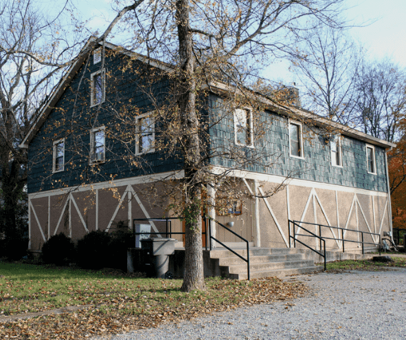

Our History

Click on a decade below to see what shows have graced our stage for over half a century!
1962-1963 Season
- Anniversary Waltz, Directed By BJ Huggins
- Country Girl, Directed By Lewis Rosenthal
- Sabrina Fair, Directed By Bill Wilson
1963-1964 Season
- Pygmalion, Directed By Ed Howard
- Angel Street, Directed By Bren Huggins
- Picnic, Directed By Charles Dean
- The Tender Trap, Directed By Lorraine Evans
1964-1965 Season
- A Shot in the Dark, Directed By Ed Howard
- Separate Tables, Directed By Ed Howard
- The Spiral Staircase, Directed By Bren Huggins
- The Moon is Blue, Directed By Helen Findley
1965-1966 Season
- See How They Run, Directed By Joy Anthony
- The Gazebo, Directed By Bren Huggins
- The Glass Menagerie, Directed By David Gawlikowski
- Blithe Spirit, Directed By BJ Huggins
1966-1967 Season
- Mary, Mary, Directed By Hal Christiansen
- Caine Mutiny Court Martial, Directed By Lane Boutwell
- Bus Stop, Directed By Tom Harris
- Deadly Game, Directed By Don Cowan
1967-1968 Season
- Harvey, Directed By Joy Anthony & Carlton Sivells
- The Rainmaker, Directed By Bill Holland
- Any Wednesday, Directed By Tom Harris
- Stop the World, I Want to Get Off, Directed By Clyde Cromwell Jr
1968-1969 Season
- The Odd Couple, Directed By Grandville S Ridley III
- A Delicate Balance, Directed By Tom Harris
- Never Too Late, Directed By Bren Huggins
- How to Succeed in Business Without Really Trying, Directed By Clyde Cromwell Jr
1969-1970 Season
- One Acts: Crawling Around, Sandbox, Aria de Cap, Picnic on the Battlefield, Directed By Dot Harrison, Steve Cates, Jackie Archer, June Martin
- Luv, Directed By Jean Lind
- Once More With Feeling, Directed By Don Cowan
- Come Back, Little Sheba, Directed By Ruth Taylor
- A Thurber Carnival, Directed By Lane Boutwell
- Pajama Game, Directed By Clyde Cromwell Jr
1970-1971 Season
- The Peanut Gallery, Directed By Jackie Archer & Tom Harris
- Bell, Book and Candle, Directed By Bill Holland
- Summer and Smoke, Directed By June McCash
- Lo and Behold, Directed By Anne Petty
- The Fantasticks, Directed By Michael Salzman
1971-1972 Season
- Bitz, Directed By Charles Dean & Dot Harrison
- A Midsummer Night's Dream, Directed By Richard Jordan
- Andersonville Trial, Directed By Richard Boyd
- Everybody Loves Opal, Directed By Tom Harris
- Once Upon a Mattress, Directed By Tommy Gray
1972-1973 Season
- Good Grief, A Griffin, Directed By Clyde Cromwell Jr
- Star-Spangled Girl, Directed By June McCash
- My Three Angels, Directed By Alex Harvey & Tom Harris
- I Never Sang for My Father, Directed By Richard Boyd
- Damn Yankees, Directed By Clyde Cromwell Jr & Hal Christiansen
1973-1974 Season
- Ham and Cheesecake, Directed By Joe Keenan
- You're a Good Man Charlie Brown, Directed By Richard Boyd
- A Thousand Clowns, Directed By Tom O'Brien
- The Mouse Trap, Directed By Ralph Smith
- Mame, Directed By Clyde Cromwell Jr
1974-1975 Season
- He Ain't Done Right by Nell, Directed By Charle Dean
- Wizard of Oz, Directed By James Reed
- Plaza Suite (3rd act only), Directed By Joe Keenan
- The Unsinkable Molly Brown, Directed By Richard Boyd
- 6 Rms Riv Vu, Directed By Nan Keenan
- The Effects of Gamma Rays on Man-in-the-Moon Marigolds, Directed By Tom Harris
- Camelot, Directed By J R Wears
- Red, White and Blue Revue
1975-1976 Season
- This 'n That, Directed By Richard Boyd
- Anything Goes, Directed By Richard Porter
- All the King's Men, Directed By Charles Dean
- The Sunshine Boys, Directed By Nan Keenan
- George M, Directed By Richard Boyd
1976-1977 Season
- You Can’t Take it With You, Directed by Mark Drum
- Guys and Dolls, Directed by Ralph Smith
- Janus, Directed by Mary Jane Chrismon
- Special Tribute to Clyde Cromwell, Directed by Granville Ridley III
- Barefoot in the Park, Directed by Alex Harvey, Jr.
- The Roar of the Greasepaint, the Smell of the Crowd, Directed by Paul Macker
1977-1978 Season
- Spoon River Anthology, Directed By Jerry Hatmaker
- Man of La Mancha, Directed By Virginia Jackson
- Plaza Suite, Directed By Mel Toombs
- One Flew Over the Cuckoo's Next, Directed By Nan Keenan
- Oliver, Directed By June and Bart McCash
1978-1979 Season
- Alice in Wonderland, Directed By Mel Toombs
- Bye Bye Birdie, Directed By Mark Drum
- Twigs, Directed By Mary Jane Chrismon
- Someone's Waiting, Directed By Joe Keenan
- Little Mary Sunshine, Directed By Van Fox
1979-1980 Season
- Pippin, Directed By Mary Jane Chrismon
- Tales of Winter (Reader's Theater), Directed By M & R Ordoubadian
- Who's Afraid of Virgina Woolf?, Directed By Nan Keenan
- The Mikado, Directed By Randie Blooding
1980-1981 Season
- Cabaret, Directed By Mary Jane Chrismon
- Man and Woman (Reader's Theater), Directed By Margaret Ordoubadian
- Absurd Person Singular, Directed By Tom Harris
- Cyrano, Directed By Bart McCash
1982-1983 Season
- A Doll's House, Directed By Ayne Venanzio
- Death Trap, Directed By Joy Anthony
- Here's Love, Directed By Mary Jane Chrismon
- Cole, Directed By Susan Pinkerton
- Trifles, Directed By Susan Glaspell
- That Day, Directed By Michael Scanlon
- Cat on a Hot Tin Roof, Directed By Dot Harrison
1983-1984 Season
- Dark of the Moon, Directed By Ted Gray
- Lion in Winter, Directed By Jerome Davis
- The Drunkard, Directed By Nan Keenan
- Cactus Flower, Directed By Frank Ginanni
- My Fair Lady, Directed By Denis Root
1984-1985 Season
- Hans Christian Andersen, Directed By Dot Harrison
- Angels Fall, Directed By Jerome Davis
- Look Homeward Angel, Directed By Greg Grimsley
- Accommodations, Directed By Dee Anthony
- Diamond Studs, Directed By Richard Boyd
1985-1986 Season
- The Wizard of Oz, Directed By James Reed
- Little Me, Directed By Susan Pinkerton
- Crimes of the Heart, Directed By Tom Harris
- Arsenic and Old Lace, Directed By Bart McCash, June McCash
- Fiddler on the Roof, Directed By Nan Keenan
1986-1987 Season
- TO Murfreesboro With Love, Directed By Joe Keenan
- Annie, Directed By Robert Hiers
- The Dining Room, Directed By Rick Clark
- The Dresser, Directed By Darryl Deason
- The Sound of Music, Directed By Mary Jane Chrismon
1987-1988 Season
- They're Playing Our Song
- The Prime of Miss Jean Brodie
- Winnie the Pooh, Directed By Diana Fugate
1988-1989 Season
- Kiss Me Kate, Directed By Dot Harrison
- Agnes of God, Directed By Robert Hiers
- The Real Inspector Hound, Directed By Bruce Newman
- South Pacific, Directed By Dot Harrison & Diana Fugate
1989-1990 Season
- Huckleberry Finn, Directed By Elizabeth Dugger
- Godspell, Directed By Michael McGee
- Barefoot in the Park, Directed By Ralph Smith
- The Best Christmas Pageant Ever, Directed By Terry Womack
- The Lady's Not for Burning, Directed By Stephen Dees
- Evita, Directed By M J Miller/V Jackson
- Bellefont, Directed By Tom Harris
1990-1991 Season
- Pump Boys & Dinettes, Directed By Dale McGilliard
- The Odd Couple, Directed By Robin Overbey
- The Little Foxes, Directed By Eva Wright
- Crossing Delancey, Directed By Tim Davis
1992-1993 Season
- Mornings at Seven, Directed By Mary Jane Miller
- The Foreigner, Directed By George W. Manus Jr.
- Wait Until Dark, Directed By Susan Pinkerton
- Nunsense, Directed By Connie Bryant
1993-1994 Season
- Steel Magnolias
- Greetings
- The Diary of Anne Frank
- Oklahoma
1994-1995 Season
- Nunsense II
- Farndale..,
- Vanities
- On Golden Pond
1995-1996 Season
- I Remember Mama
- Music Man
- Our Town
- Some Enchanted Evening
1996-1997 Season
- I Do! I Do!
- Inherit the Wind
- Night of the Iguana
- Second Lady
1997-1998 Season
- Jakes' Women
- Ten Little Indians
- The Complete Works of Shakespeare Abridged, Directed By Joe Sturgeon
- Bye Bye Birdie, Directed By Don Fahey
- The Boys Next Door
1998-1999 Season
- Death Trap, Directed By Tom Harris
- Driving Miss Daisy, Directed By Bill Goodwin
- Barefoot in the Park, Directed By Brian Smith
- The Tempest, Directed By Joe Sturgeon
- A Funny Thing Happened on the Way to the Forum, Directed By Wayman Price
1999-2000 Season
- The Haunting of Hill House, Directed By Crosby Hunt
- It's a Wondeful Life, Directed By Brian Smith
- The Trip to Bountiful, Directed By Bill Goodwin
- Catfish Moon, Directed By Deborah Anderson
- The Fantasticks, Directed By Gayle Porterfield
2000-2001 Season
- Cat on a Hot Tin Roof, Directed By Wayman Price & Shane Lowery
- Mame, Directed By Charlie Parker
- I Never Sang for My Father, Directed By Marjorie Miller
- The Sunshine Boys, Directed By Ione Smith
- Camelot, Directed By Keith Dixon
2001-2002 Season
- Guys & Dolls, Directed By Wayman Price
- Misery, Directed By Shane Lowery
- A Community Christmas, Directed By Charlie Parker
- Romeo & Juliet, Directed By Ione Smith
- Born Yesterday, Directed By Majorie Clark
2002-2003 Season
- Godspell, Directed By Gayle Porterfield
- To Kill a Mockingbird, Directed By Shane Lowery
- Oliver, Directed By Ralph Smith
- A Midsummer Night's Dream, Directed By Jacob Truax
- Rosencrantz and Guildenstern are Dead, Directed By Joseph Womack
2003-2004 Season
- 1776, Directed By Joel Meriwether
- The Crucible, Directed By Joshua Paull
- Alice in Wonderland, Directed By Paige Mayercik
- 12 Angry Men, Directed By Wayman Price
2004-2005 Season
- South Pacific, Directed By Joel Meriwether
- Little Women, Directed By Chriistana Kergosien
- Snow White & the Seven Dwarves, Directed By Rita Salman
- The Miracle Worker, Directed By George W. Manus Jr.
- Come Back to the 5 and Dime, Jimmy Dean, Jimmy Dean, Directed By Christina Reinbold
2005-2006 Season
- Bad Seed, Directed By Wayman Price
- Anne of Green Gables, Directed By Christina Reinbold
- Mouse Trap, Directed By Karen L. Martin
- Hot L Baltimore, Directed By Bob Roberts
2006-2007 Season
- Wait Until Dark, Directed By Wayman Price
- Babes in Toyland, Directed By Rich E. Hogan
- True West, Directed By Karen L. Martin
- Kiss Me Kate, Directed By Charlie Parker
- Vanities, Directed By Christina Reinbold
2007-2008 Season
- Hide & Seek, Directed By Dana Richardson
- Same Time Next Year, Directed By Shane Lowery
- The Face of Emmitt Till, Directed By Shane Coffey
- High Society, Directed By Wayman Price
- Ordinary People, Directed By Bob Roberts
2008-2009 Season
- Over the River and Thru the Woods, Directed By William Keathley
- Fat Pig, Directed By E. Roy Lee
- Cheaper by the Dozen, Directed By Shane Lowery
- Working, Directed By Wayman Price
2009-2010 Season
- The Diary of Anne Frank, Directed By Bryan M. Booth
- 1940's Radio Hour, Directed By Carl Glenn with Wayman Price
- Don't Dress for Dinner, Directed By Sherry Booth Sunday
- How I Learned to Drive, Directed By Shane Lowery
- Best Little Whorehouse in Texas, Directed By Wayman Price
- Proof, Directed By Jamie Storvik
2010-2011 Season
- The Boys Next Door, Directed By Chris Todd
- Mrs. Bob Cratchit's Wild Christmas Binge, Directed By Todd Robinson
- Jekyll & Hyde, The Musical, Directed By Shane Lowery
- The Children's Hour, Directed By Wayman Price
- Blithe Spirit, Directed By Pete Hiett III
2011-2012 Season
- One Flew Over the Cuckoo's Next, Directed By Donna Seage
- Pippin, Directed By Arabelle Pollick & E. Roy Lee
- Sweeny Todd, Directed By Shane Lowery
- Our Miss Brooks, Directed By Wayman Price
- God's Favorite, Directed By Craig Core
2012-2013 Season
- Crimes of the Heart, Directed by Wayman Price
- A Funny Thing Happened on the Way to the Forum, Directed by Arabelle Pollick
- Cat on a Hot Tin Roof, Directed by Shane Lowery
- The 1940s Radio Hour, Directed by Danielle Araujo
- Death Trap, Directed by Todd Robinson
- Company, Directed by Dalton Reeves
- The Complete Works of Shakespeare (Abridged), Directed by Donna Seage
- The Tempest, Directed by Andy Ford
2013-2014 Season
- Seussical, Directed by Shane Lowery
- Bent, Directed by Dalton Reeves
- Dinner With Friends, Directed by Andy Ford
- Dearly Departed, Directed by Bob Fish
- Chess, Directed by Wayman Price
- The Nerd, Directed by E. Roy Lee
2014-2015 Season
- Sweet Charity, Directed by Cyndie Verbeten
- Hamlet, Directed by Andy Ford
- And Then There Were None, Directed By Jonathan Higdon
- Moon Over Buffalo, Directed by Ryan Vogel
- Peach Blossom, Directed by Wayman Price
- Avenue Q, Directed by Danielle Araujo
2015-2016 Season
- Of Mice and Men, Directed by Frank Hasenmueller
- My Fair Lady, Directed by Melvin C. Spring
- The Exonerated, Directed by Sean Dixon
- Lend Me a Tenor, Directed by Charlie Parker
- Butterflies Are Free, Directed by Wayman Price
- Next To Normal, Directed by Georgia Hemrick
2016-2017 Season
- The Crucible, Directed by Anderson Dodd
- Catfish Moon, Directed by Wayman Price
- Rumors, Directed by Alex DeHoff
- The Goat, Directed by Wayman Price
- Pocatello, Directed by KT Turner
- Arsenic and Old Lace, Directed by Melvin C. Spring
2017-2018 Season
- Hedda Gabler, Directed by Joseph Stanley
- Race, Directed by Dalton Reeves
- Stop Kiss, Directed by Shane Lowery
- The Boy Friend, Directed by Wayman Price
- Vanya, Sonia, Masha, and Spike, Directed by KT Turner
2018-2019 Season
- In the Next Room, or the vibrator play, Directed by Dalton Reeves
- Sylvia, Directed by Jennifer Grissom-Reeves
- Cabaret, Directed by Payton McCarthy
- The Pillowman, Directed by Brenden Taylor
- Fun Home, Directed by Stephen Burnette
- The Little Foxes, Directed by Wayman Price
2019-2020 Season
- A Piece of My Heart, Directed by Pete Hiett
- The Volunteer, Directed by Zoe Zent
- Cat on a Hot Tin Roof, Directed by Shane Lowery
- Spoon River Anthology (Virtual), Directed by Shane Lowery and Jess Townsend
- Tales from Neverland (Virtual), Directed by Emma Hawkins
2020-2021 Season
- Peering Into Darkness, Directed by Shane Lowery
- Hamlet, Directed by Shane Lowery and Zoe Zent
- Home for the Holidays (Virtual), Directed by Madison Tobeck and Jordan Dickerson
- A Midsummer Night’s Dream, Directed by Shane Lowery
- The Laramie Project, Directed by Jamie Leigh Stevens